A Guide for Activists by the Parking Reform Network
Written by Evan Kindler in collaboration with Tony Jordan and Jane Wilberding
Do Your Streets Have a Parking Problem?
Do people circle the block looking for parking?
Is convenient parking at the curb hard to find?
Are many parking spaces occupied by long-term parkers?
Do residents fear new development and the traffic it will bring?
Are parking lots and garages more expensive every month?
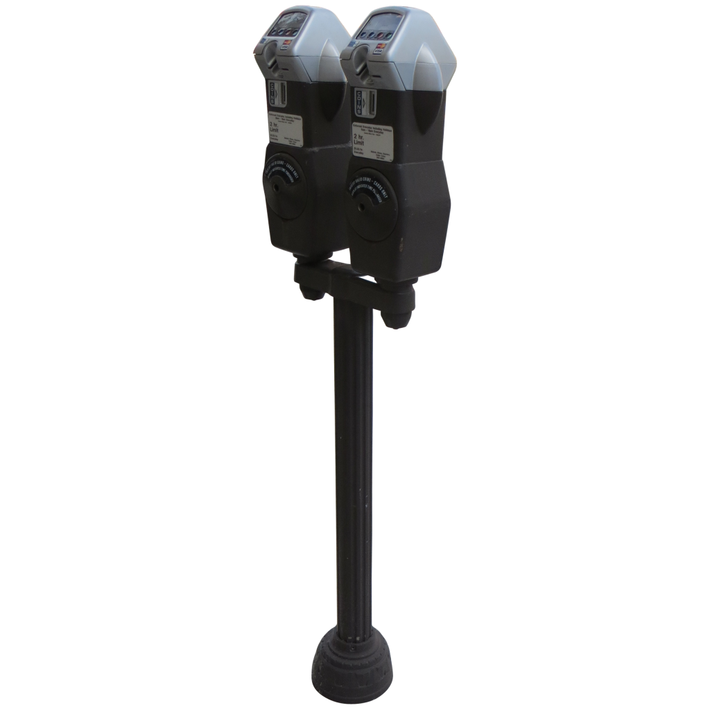
Consider a Parking Benefit District
What is a Parking Benefit District?
As parking reform pioneer, Donald Shoup, describes it, a PBD is an area where the local governing body “spend[s] meter revenue for public services in the metered area. These cities offer each neighborhood a package that includes both priced parking and better public services. Everyone who lives, works, visits, or owns property in a Parking Benefit District can then see their meter money at work.”* We will expand this definition slightly to also include parking permit revenue, as it is also a way to charge for parking.
Charging for parking is central to PBDs. The fee serves two purposes:
To manage parking
To generate revenue to reinvest in the PBD area
A curb parking space is a limited commodity and should be managed using the economic principle of supply and demand. By charging a market-rate price for spots in high demand, there will almost always be an open spot. Generally, 85% occupancy is optimal because it allows enough turnover to guarantee parkers a spot on the same block as their destination.
PBDs are a parking management tool to garner support for ‘right-priced’ parking. They aim to make increased parking rates more palatable to the public by using a portion of the revenue to improve the surrounding area. If the funds are used to encourage alternative transportation, parking demand will decrease bringing the price of parking down with it.
People often think that creating more parking is the only solution for parking problems. Parking projects are expensive. The average parking garage costs nearly $10 million and invests space towards a concrete monument to car dependence.* The vast amount of asphalt and concrete used in parking structures tax the environment. Their energy-intensive production processes release substantial amounts of CO2 and other GHGs.** Lots and garages impede natural water drainage and filtering causing rain contaminated with pollutants from the parking surface to flow into nearby waterways via the sewer system.* They also contribute to the heat island effect by absorbing and retaining heat from the sun. This causes cities to be 1-7 o hotter than surrounding less developed areas leading to increased energy consumption, decreased water quality, and contributing to various heat-related health consequences.** The less unnecessary space dedicated to parking, the better. For a much smaller financial and spatial investment, charging correctly for the existing parking generates revenue and solves a myriad of parking issues.
We’ve compiled a list of successful examples of parking benefit district implementation below. These examples were selected to showcase the wide applicability of PBDs as a parking management tool and their versatility in addressing specific local issues via parking revenue.
To promote density, the city relaxed parking requirements for new developments. The strategy worked and new apartments brought more college students and their cars. However, this created a parking headache for the adjacent neighborhood. Rather than renting spaces from the apartment as had previously been required, students now parked in the free on-street spots. Neighbors urged the city to take action as the free parking spots became long term student car storage.
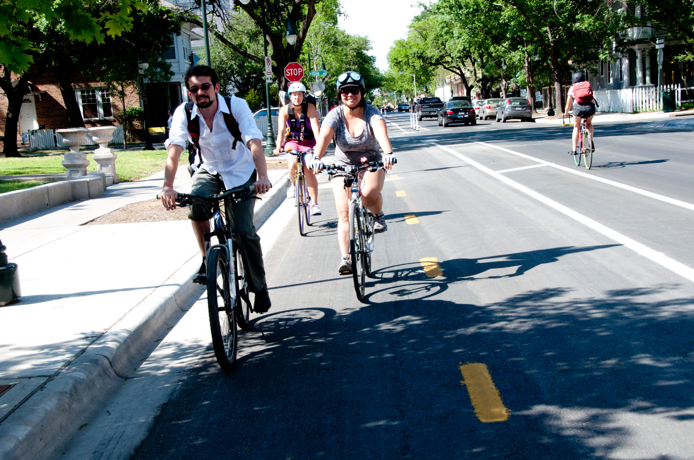
City of Austin Parking District, West Campus
With a $43,000 grant from the EPA, the city piloted a PBD from 2006-2011. The 96 meters produced $163,000 in the first year, $40,000 of which was spent on sidewalk and curb enhancements, crosswalks,benches, transit shelters and two way bike lanes.
In 2011, after a rigorous public debate, the city passed an ordinance allowing neighborhood associations to apply for PBD. In 2012, the city established the West University PBD, expanding the previous PBD and adding 254 meters. 51% of dedicated to promoting alternative transportation and reducing vehicle miles traveled.
The PBD generated $150,000 in its first full year, while the area saw a 10% growth in sales tax revenue. Residents have chosen to invest approximately $1 million in parking revenue on sidewalk improvements on 25th street within the West Campus PBD.
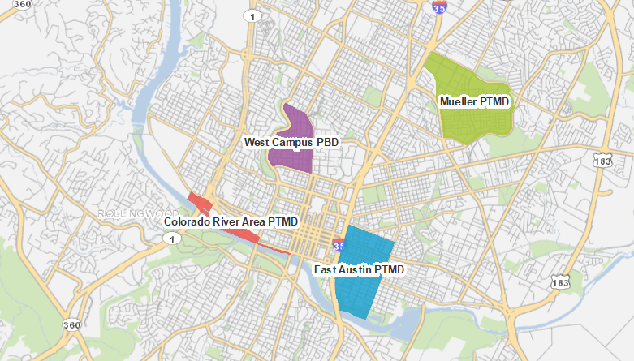
City of Austin Parking Districts provided by the Austin Transportation Department
The city also passed an ordinance creating the Parking and Transportation Management District Program (PTMD) in 2014. Austin’s PTMDs function similarly to its PBD, but are more widely applicable. PMTDs broaden revenue spending requirements to include recreational spaces and allow business owners, in addition to residential groups, to request their implementation. The East Austin PTMD manages night time parking with meter enforcement beginning at 6:00 PM and has funded 150 feet of sidewalk to fill gaps. The Colorado River Area PTMD and the Mueller PTMD charge for parking around the Colorado River Trail and Mueller Lake Park, respectively, funding the upkeep of the popular recreational spaces.
More Information:
“Parking Benefit Districts in Austin, Texas” by Leah M. Bojo, Chapter 48 in Donald Shoup’s Parking and the City.
A densely populated neighborhood with a bustling nightlife scene, South Side Flats was experiencing quality of life problems in 2017. The weekend influx of restaurant and bar patrons necessitated more trash pickup and street cleaning than previously allocated for the area. Increased popularity as a nighttime destination brought increases in public disturbances and crime. The search for parking sent visitors into residential areas, where they bothered neighbors and were targeted for crime. Vehicle break-ins were the most common, but there were also muggings and, in some cases, shootings.
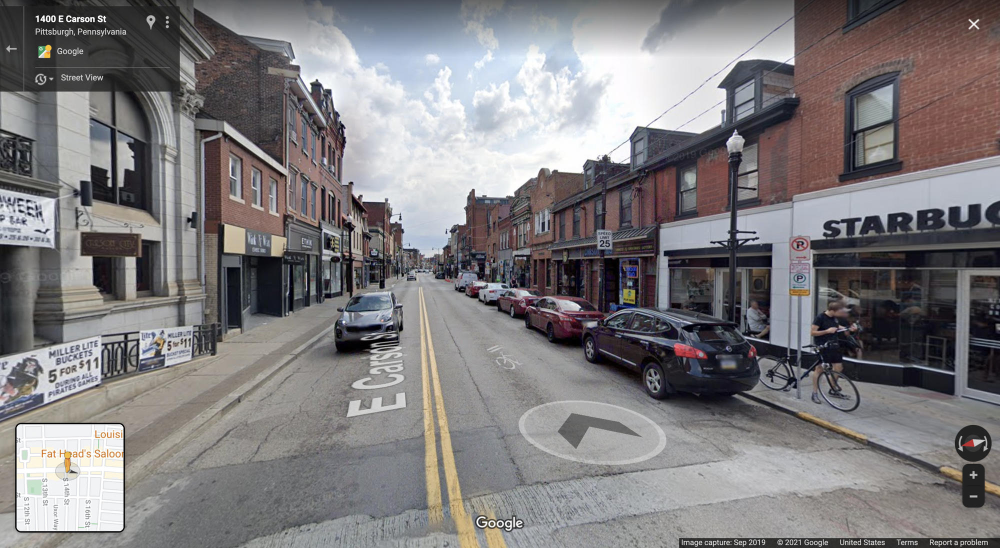
The metered spots to the right become no parking zones on the weekends to give cars room to pull over for emergency vehicles. 1400 E Carson St., Pittsburgh, PA in September 2019 captured via Google Streetview
The city needed to find a way to stabilize the neighborhood. Described as “a public safety plan disguised as a public transportation plan” by City Council President Bruce Kraus,* the city implemented a PBD pilot in March of 2017.
The pilot included:
Weekend, nighttime meter enforcement of the district’s 688 on-street spaces
An extension of residential permit parking (RPP) hours
A complimentary weekend shuttle to free nearby parking lots
A safety lane comprised of 35 parking spots to increase emergency vehicle access on the weekends.
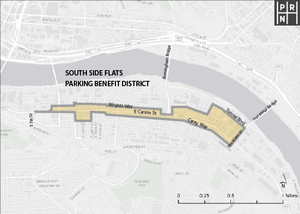
The net revenue the city collects from meters after 6:00 PM is reinvested in the neighborhood though the Department of Public Safety. In the first 8 months, the PBD generated $134,000 and now regularly produces around $210,000 per year. The city has spent the revenue adding lighting and signage, restriping the street, creating a new residential permit program, paying for dedicated nighttime police patrols and parking enforcement, buying a street sweeper to keep garbage out of the nearby river, and implementing a rideshare pickup/dropoff area.
As part of a wider movement to increase safety in the area, the PBD has helped separate the uses of neighborhood space. The stricter RPP enforcement funnels visitors into the metered spots, discouraging parking that necessitates wandering through the neighborhood late at night. Since the PBD began, there has been a 20% increase in rideshare usage and a 37% decrease in criminal activity. The parking occupancy nears 100% during peak demand, suggesting that the parking could be even better managed with higher pricing.
Old Pasadena had been the commercial center of Pasadena from the city’s founding in 1874. The Great Depression and suburban sprawl drove businesses from the area and it fell into decline in the ‘50s. Attempts to revive the shopping district by emphasizing its unique, historic character in the late '80's and early '90s had failed and vacant stores and buildings were falling into disrepair. The businesses that remained had employees parked in front of them, causing customers to park further away. With employees moving their cars every 2 hours, the best parking was constantly occupied.
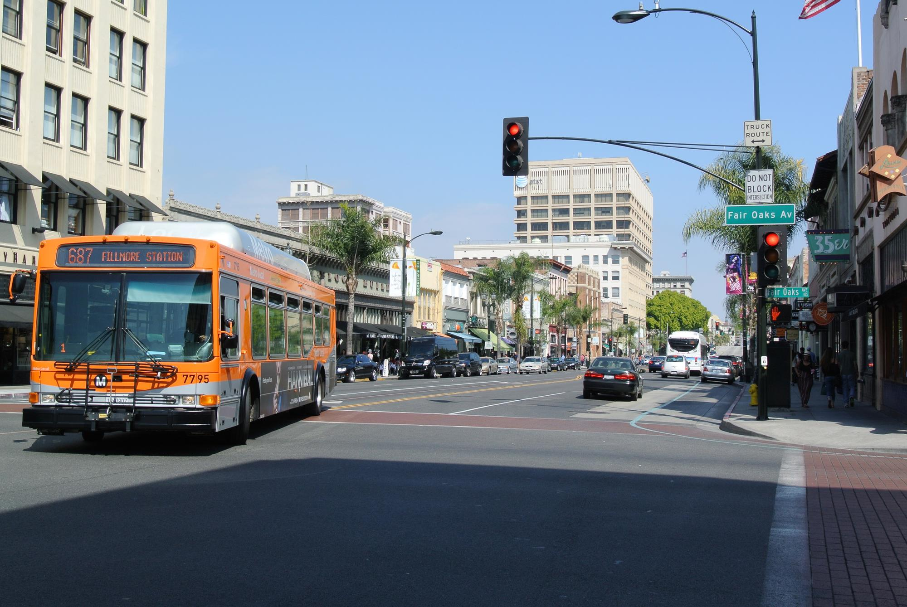
The city thought that charging for parking could help address these issues and promised to reinvest all net revenue back into the metered district to appease business owners' concerns. They passed an ordinance to install meters in 1993 and since then they have consistently produced $1-1.8 million per year in revenueafter operating expenses. The city kickstarted the renovation process by taking out a $5 million dollar loan for the “Old Pasadena Streetscape and Alleyways Project.” This money, financed by future parking revenue, funded street furniture, trees and tree grates, decorative lighting, and alley restoration.
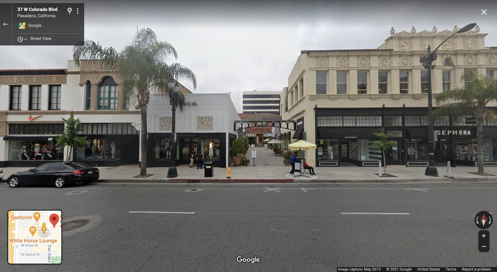
From 1993-1998, property tax revenue tripled and sales tax revenues quadrupled. Douglas Kolozsvari and Donald Shoup call this process the virtuous cycle: As meter revenue pays for public improvements, the public improvements attract more visitors who pay for curb parking, and more meter revenue is then available to pay for more public improvements. The PBD continues to fund events, street maintenance (more visitors necessitates more maintenance, a problem that PBDs create and solve) marketing, and police foot patrols. Another nearby shopping district, Plaza Pasadena, did not see comparable increases and was demolished in 2001. The former premier shopping district of Pasadena requested a PBD similar to Old Pasendena’s, which has now become the South Lake Parking Place parking meter zone established in 2007. The Civic Center also has a meter district and Pasadena’s Parking Manager Jon Hamblen believes that a new PBD will be implemented in the Playhouse District in the coming years.
Columbus overhauled its citywide parking policy in 2019 with a new strategic parking plan. The previous plan had been fractured and the city hoped to simplify the parking system moving forward. From this plan, the Short North PBD was born in January of 2019 as a means to provide mobility options to employees in the mixed use arts district between downtown and Ohio State University. The new plan implemented residential permit parking and meters throughout the district, which limited employees’ parking options. After their first attempt at an employee shuttle failed, the city continued to work with employers and employees to find a way to use its PBD funds that effectively addressed the district’s needs. They spent meter revenue to give employees discounted transit fares and car, ride and bike share memberships. They also established an employee permit program for both on and off street parking, giving businesses an opportunity to purchase up to 10 permits at a progressive rate.
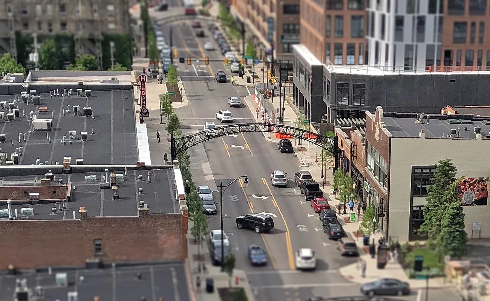
The city also passed an ordinance creating the Parking and Transportation Management District Program (PTMD) in 2014. Austin’s PTMDs function similarly to its PBD, but are more widely applicable. PMTDs broaden revenue spending requirements to include recreational spaces and allow business owners, in addition to residential groups, to request their implementation. The East Austin PTMD manages night time parking with meter enforcement beginning at 6:00 PM and has funded 150 feet of sidewalk to fill gaps. The Colorado River Area PTMD and the Mueller PTMD charge for parking around the Colorado River Trail and Mueller Lake Park, respectively, funding the upkeep of the popular recreational spaces.
The meter revenue funds projects to enhance parking management and alternative transportation that are proposed annually by a committee community member and approved by the city. In 2019, the first full year of operations, the meters generated $2.64 million in gross revenue, $535,000 of which went to the PBD after operating expenses. The district spent $225,000 on a contract with the Short North Alliance, the local business improvement district (BID), to provide the PBD services. These took the form of off street parking discounts, parking validation codes for businesses, a communications campaign to educate the public on the parking changes, and the aforementioned employee mobility fund. The remaining revenue was carried over to 2020, where it became an unexpectedly crucial revenue stream. As the COVID-19 virus kept people at home, parking revenue decreased significantly. The Division of Parking Services drew upon the parking benefit district revenue generated in 2019 to fund its essential expenses and maintain the program without having to take a loan or make cutbacks.
All of Short North is either meter or permit parking. High St., which runs directly through the district, is completely metered. Between 8AM and 10PM, guests can park in permit parking for 3 hours for $1-3 per hour, depending on which of the 5 zones they’re in. Permit holders can park anywhere within their zone at any time of day for an annual cost of $25, with a $15 discount for low income residents. Permit and citation revenue does not contribute to the PBD fund, instead going to the city general fund. Price is determined by occupancy, with the goal of 80% occupancy. It is adjusted twice per year based on occupancy data collected through the use of license plate recognition technology. So far, this process has actually lowered parking prices in the area.
Permit and citation revenue does not contribute to the PBD fund, but instead goes to the city’s general fund. Pricing is adjusted twice per year based on occupancy data collected through the use of license plate recognition technology. To date, this process has actually lowered parking prices in the area. This methodology is summed up by Robert Ferrin, Columbus’ Assistant Director for Parking Services, saying, “The Short North will never be ‘done.’ We will use data to monitor, and we’ll make changes to meet a goal of on-street occupancy of 60 to 80 percent, and we’ll do it every three months – we’re not going to just put it in and walk away.”1
Short North’s success prompted the city to set up a PBD in Downtown Columbus in February 2020. The businesses in this district are mostly restaurants catering to commuters and the decline of office workers in the area due to the COVID-19 pandemic has lowered parking demand, delaying the full implementation of the PBD. Once demand increases again, a committee of stakeholders set up by the city will take charge of managing the revenue. An early suggestion for spending has been to fund the commuter pass program. Started in 2018, the C-Pass program is funded by the downtown Business Improvement District and has seen companies moving away from their monthly parking benefits towards providing their employees with free transit rides. So far, this program has seen early success, doubling the number of commuters on public transit from 5% to 10%.
In 1996, Portland adopted its Parking Meter District Policy which outlined how new parking meter districts, now called parking management districts (PMD), should operate. Downtown Portland had had metered parking since 1970, but the city wanted to expand metering and create a new management strategy. Since then, the city has created 4 new PMDs, all of which act as benefit districts.
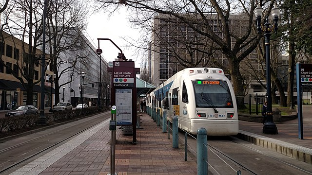
The Lloyd District. Portland, Oregon
The Lloyd, Marquam Hill, Northwest, and Central Eastside PMDs each have a parking committee of local stakeholders that recommends uses of the parking revenue to the city. After covering operating expenses and splitting revenue with the city, the annual revenue reinvested into the districts ranges from $150,000 in 13 meter Marquam Hill, to $1 million in Northwest. The PMDs receive 51% of their net meter revenue to spend on “transportation demand management (TDM) programs; parking services; small safety and/or capital projects for walking bicycling, and transit; shared use arrangements for existing parking facilities; investments to improve the movement and delivery of goods and services; and new parking facility development.”* These have taken the form of sidewalk reconstruction in Marquam Hill while Northwest has funded transportation wallets and updated meter and permit technology. Recently, Lloyd has built protected bicycle lanes, bicycle parking, and walking infrastructure, while conducting studies on their efficacy. Both the Lloyd and the Central Eastside PMDs helped to fund the Congressman Earl Blumenauer Bicycle and Pedestrian Bridge connecting the two neighborhoods over Interstate 84.
Northwest and Central Eastside are especially interesting because they also leverage parking permit revenue towards TDM efforts. They have added a surcharge to the citywide permit price, $120 in Northwest and $280 in Central Eastside,100% of which is returned to the district to fund transportation wallets. These wallets offer $769 worth of bus, streetcar, and scooter/bikeshare credit for $99. Low income residents and employees in these neighborhoods can also qualify for a Golden Transportation Wallet which provides all of the same benefits at no cost. To encourage transit ridership further, residents and businesses can also exchange their permits and in return receive a transportation wallet.
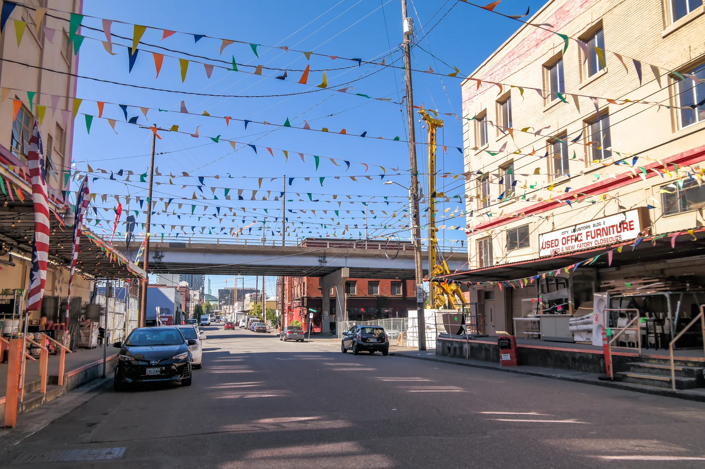
Central Eastside Industrial Disctrict. Portland, Oregon
In July, 2021, the city took another step towards a justice-oriented transportation network as the Portland Bureau of Transportation’s (PBOT) Pricing Options for Equitable Mobility (POEM) task force made a series of recommendations to the City Council. Recognizing the disproportionately negative impacts that the current transportation network has on both low-income residents of color and the environment, the POEM task force deliberated for 18 months to determine how pricing strategies could create a more equitable and sustainable transportation system. Appointed by the City after a 2 month open recruitment, the 19 member task force held monthly meetings open to the public to determine their suggested strategy. They recommend a flexible commuter benefits program that requires employers who provide free or subsidized parking to provide equivalent benefits to non-driving employees in the form of alternative transportation options or as a taxable cash income. They also suggest adding more metered and permitted benefit districts as well as making them easier to create. Emphasizing the need for demand-based parking pricing, the task force urged the accelerated adoption of dynamic pricing policies outlined in the Performance Based Parking Management Manual developed by the PBOT in 2018. They recommend that this pricing strategy extend into private parking lots as well in the form of an additional fee to create a more holistic parking management strategy based on efficiency and turnover. The POEM task force is expecting to hear back from the City in January 2022.
What makes a parking benefit district? In this section, we will outline the various aspects of PBDs that we’ve found to be best practices and help you prepare for the many interest groups you will encounter.
Key Elements
PBDs work because the metered spots are located in an area of high demand. People are willing to pay for convenience and the higher the demand, the higher the price of parking. PBDs work by pricing parking at the ‘market-rate,’ or the price that will bring peak occupancy down to the optimal 85%. For this reason, we generally recommend considering a PBD if your peak occupancy is above 85%. High occupancy is easy to see. If all of the spots on a block are occupied, the occupancy is 100%. 85% occupancy leaves 1-2 open spots per block.
Parking studies provide a more detailed assessment of your parking inventory. They provide the data necessary to make informed decisions based on accurate occupancy rates throughout a district. Before a PBD is implemented a parking study must be conducted. If an area has prolonged stretches of high occupancy, a PBD is a plausible solution to create more open spaces. As Pittsburgh has shown us, PBDs are flexible and can be adjusted to address specific times of high occupancy. However, before cities can make this adjustment, they must first have a complete understanding of their current parking situation.
It is also important to note that there should be enough parking spots within the proposed meter area to pay for themselves. It costs to install, upkeep, enforce, and collect from the meters. If there aren’t enough of them, they will become a cost, rather than providing a revenue benefit. While PBDs vary in size from a few blocks to substantial sections of a city, more paid parking and higher prices generate more revenue. In Austin, they’ve determined that they need at least 96 metered spots per district and require that many to establish a PBD. The necessary numbers will vary based on the location’s expenses and market rate prices. However, meters are not the only option and are a bit antiquated for a modern parking system. Pay stations can reduce the spacial investment necessary and cut costs from installation and collection, but they are still a bit too inflexible.
If possible, we recommend an app-based approach to parking management. Smart device applications eliminate hardware costs, reducing the size of the initial and continuous investment. Collection costs disappear, while installation and upkeep turn from infrastructure projects to software system management. This cost reduction makes smaller areas of paid parking feasible while generating more revenue in larger areas. Once the system is in place and the investment made, spreading it throughout a city or town is both easy and cheap. An app also provides the flexibility for dynamic pricing that can change instantaneously with demand (see next section ‘Market Rate Pricing). As parking management continues to modernize with technology, parking apps will not only allow drivers to pay for parking, but to find open spaces. This future is a reality in Penang, Malaysia, where sensors in parking lots alert Penang Smart Parking app users to where they can park.*
As many places in the US are transitioning to an app-based approach in conjunction with their existing meters and pay stations, physical payment receptacles are becoming obsolete . Sao Paulo, Brazil started using a parking app in 2016, skipping metering entirely by replacing their coupon system with the ‘Digital Blue Zone’. Users can pay via app, SMS, or at nearby shops who use the app on their behalf. Within a year parking revenues had increased by 60% as fraud declined.* Providing an option for in-person payment may still be important for certain users as the elderly, tourists, or people without smartphones could find this system difficult to navigate. Shopkeepers could be enlisted to help as in Sao Paulo or parking attendants tasked with enforcement could also act as cashiers (more on attendants later in ‘Beyond Parking: PBDs for Equity). Ventura, California’s BID Executive Director has even expressed interest in implementing a system that allows merchants to pay for customers’ parking to increase length of stay and create loyalty.
PBDs ease the political pain of on-street parking fees but a PBD doesn't tell you how to set the prices. The best approach is a demand-based approach with the goal of achieving a few vacancies on every street section. This approach makes it clear that revenue is a nice side-benefit but the key aim is well-managed parking for the benefit of everyone. By determining the correct value of the curb space, cities can determine how much to charge to influence parking behaviors and meet occupancy goals. If the price is too low, the most convenient spots will nearly always be occupied and drivers will circle the block creating congestion. If the price is too high, drivers will park elsewhere and there will be too many open spots. Cities invest valuable land and resources into parking infrastructure, subsidizing driving with everyone’s tax dollars. Charging drivers for their use of the curb space built and maintained using public money lets cities fund other projects.
The ordinance establishing the PBD stipulates how the meter revenue is to be spent. Generally, the price of installation and upkeep of the meters is deducted first. Of the remaining revenue, 50-100% is reinvested in the PBD with the rest going to the city. The PBD funds are managed by a local body, like a community group, a stakeholder advisory board, or the city. The managing body is usually responsible for deciding the price of the meters and engaging with the public to determine which projects to fund. Many PBDs require the managing body to spend revenue on alternative transportation projects like sidewalk and crosswalk improvements, bike racks, and bus shelters. These restrictions aim to reduce vehicle miles traveled, further driving down parking demand, while ensuring that the spending aligns with citywide planning priorities. Read the ordinances linked at the end of the guide for more detailed breakdowns.
Unsurprisingly, ensuring that the revenue is invested properly is a large concern for residents. Even after a successful pilot, Austin residents questioned how they could be sure that the revenue would be spent in the PBD and whether there was even enough revenue to fund significant projects. In the course of our research, the only PBD that we found that had been discontinued was in La Jolla, San Diego, CA because of embezzlement.* Transparency and accountability are crucial towards gaining residents’ trust and support.
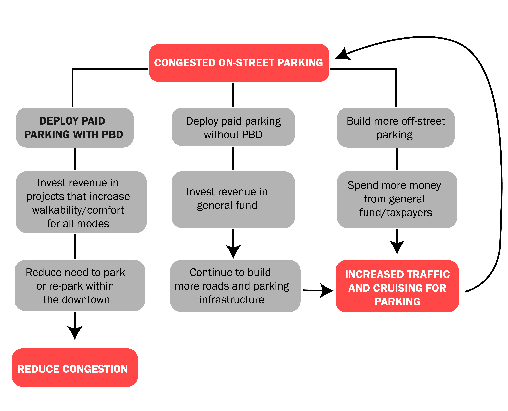
Residents living near a PBD often express concerns about their ability to park. If the city starts charging for parking a block away, won’t the parking problem just migrate to their neighborhood? RPPs solve this problem by managing residential parking using the same pricing model as PBDs, giving residents the opportunity to purchase permits. Many current RPPs within PBDs charge a nominal fee of $25 per year per permit with the opportunity to buy more at an increased price.
While charging this low price may be a necessary political concession, our ideal model would charge a market rate price determined by a uniform price auction. Residents interested in receiving a permit would bid the most they are willing to pay for a permit. If there are 100 parking spots, the top 100 bidders receive a permit, paying the lowest bidder’s price. Just as with PBD meters, these funds would be reinvested into the RPP area in various ways, benefiting all residents and charging drivers for the public resources they use. The RPP could act as an extension of the PBD, spending revenue on public improvement projects. The city could also redistribute revenue to the residents through direct payments. This strategy eases the burden of the permit price for drivers and reimburses nondrivers for the public land dedicated to parking in their neighborhood. In a mixed-income neighborhood, this dividend will support low-income households to a greater extent as it is a greater proportion of their overall income. Even still, to assure that permits aren’t distributed along a class divide, we suggest that cities offer low-income residents a bidding credit in the permit auction. As with everything in this guide, each RPP is unique and we encourage you to reach out to us via our website or info@parkingreform.org for a more detailed discussion of specific implementation solutions. While we diverge on pricing, we also suggest you look at the City of Ventura study linked at the end of this guide for a step-by-step RPP implementation guide.
Public engagement is essential to gaining support for and then successfully implementing a PBD. Stakeholder workshops allow those affected most by the PBD the opportunity to have their concerns heard and to work on tailoring the district to fulfill the needs of their community. If the area wants the best parking management and the most revenue reinvestment, then it should pursue the most aggressive parking strategy and vice versa. These workshops are meant to gauge public support for the various aspects of the PBD and to guide the end result to reflect the community’s wishes. Redwood City didn’t implement parking time limits (as many PBDs do to encourage turnover) because residents opposed them at meetings. Understanding the importance of public support, the PBD was instituted without them and it quickly became a nonissue because right pricing solved the turnover problem.
This opportunity for the stakeholders to express concerns and direct district priorities is also an opportunity for the proponents of the PBD (you!) to make the case for it. As a deviation from parking norms, PBDs require explanation. These meetings allow for more detailed discussion of their nuances and mechanisms than a flyer or coverage in the local news. We spoke to a parking official in Pittsburgh that suggested separate meetings for different interest groups to focus on their specific needs and questions. We will go into more detail about the key interest groups in the next section, but generally, we assume the two main groups will be residents and business owners.
Think about the last time you paid for parking: Where did that money go? What did it pay for? Parking money goes into the machine and seems to disappear. Adding stickers on meters and kiosks, messages on parking apps, and signs near improvement projects acknowledging how the district is spending its parking revenue helps ease the transition to paid parking. Reminding residents how parking fees are benefiting them is a low cost way to help build support for the PBD and makes paying for parking more tolerable.
Key Groups
What makes a parking benefit district? In this section, we will outline the various aspects of PBDs that we’ve found to be best practices and help you prepare for the many interest groups you will encounter.
Because PBDs are generally located in business districts, business owners and BIDs are an important group to consider. Their objections to PBDs usually fall into two categories:
Fewer people will visit the area if they have to pay to park and I will lose business to places that have free parking.
My employees drive to work. You can’t expect them to pay for parking for the entirety of their shift. Where will they park?
While apprehensions are valid, in practice, PBDs help stimulate business. Ventura implemented a PBD in 2010, and by 2013, 83% of business owners within the district supported the PBD with it earning a unanimous endorsement from the board of the neighborhood business association. The Ventura BID Executive Director praised the PBD, saying “some of our most vocal proponents of the meters had been our merchants, who have now come to appreciate that their customers can usually find a stall in front or near their store for little more than a dime or a quarter.”* Seeing an increase in visitors since its implementation, the meters in downtown Ventura generated $3.3 million in revenue in their first 6 years. Pasadena, Houston, and Austin have seen significant increases in sales tax revenue within their PBD. Charging for parking does not inhibit economic growth and instead can play an important part in supporting local businesses. Where would you rather shop: Somewhere with free parking that is always full or somewhere that charges a small fee that guarantees you a spot and will save you time? Additionally, those who do choose to park in front of a store have already made a small monetary investment in their trip suggesting that they are more likely to not only enter a business, but buy something too!
Employees not parking in the prime spots in front of businesses for hours is one of the benefits of PBDs. When parking is free, employees may occupy the most convenient spots for the entirety of their shift and customers have to park further from the business they want to patronize. Time limits do not solve this problem, as Old Pasadena has shown us. Charging correctly for parking stimulates turnover and guarantees that interested customers can park within a block of their destination. In areas with reliable public transit, PBD revenue should be used to fund transportation wallets for employees, as in Portland, Boulder, and Columbus. In areas without public transit, businesses could be included in a nearby RPP as in Columbus, who saw their PBD as a way to provide transportation options for employees. Meter revenue could also fund a shuttle to transport employees to a nearby lot with free parking, however this strategy has been tried and discontinued in both Pittsburgh, Columbus, and Portland due to lack of use. An official in Pittsburgh says that most employees opt for convenience and pay for parking.
Cars are expensive. Drivers see parking fees as an additional expense on top of the purchase price, insurance, gas, repairs, depreciation, registration, etc. No one likes paying for something that they once got for free. Assuming that drivers will not be swayed by our belief that public money and space shouldn’t continue to subsidize driving, how can we convince this group that comprises a majority of the US population that PBDs will be good for them?
To quote Donald Shoup once again: “Free curb parking on a crowded street gives a small, temporary benefit to a few drivers who are lucky on a particular day, but it creates large social costs for everyone else every day.”* Which of those costs affect drivers? Free parking reduces parking turnover, making it harder to find a spot near your destination. Right-priced parking guarantees that you will be able to find an open spot on the same block. This also reduces traffic congestion as drivers are no longer forced to circle around to find a spot. Metered spots are meant to make parking easy and convenient for drivers. The implementation of paid parking will save them time. If they want to pay, they will have a spot where they need it. If they do not, they can go directly to the nearest free spot without wasting time checking if the best spots are open.
Even still, we may not be able to convince people by appealing to their identity as a driver. However, once they exit their vehicle, the driver becomes a pedestrian and will then benefit from the investment that their parking revenue has generated. As one shopper in Pasadena put it: “This place, it’s perfect, really. They’ve kept the buildings and streets well. That makes it so attractive. People are walking around because they like the way it looks and feels. It’s something you just don’t see in Los Angeles. As a driver, I don’t mind paying for what you have here. I tell you what: for this, I will pay.”*
These arguments may not work and drivers may still oppose the PBD. That’s okay. Many people will never be happy with having to start paying for parking. Focusing too much energy on appealing to drivers can be a lost cause and weaken the parking management strategies to the point of ineffectiveness. PBDs are meant to ensure that enough key groups get onboard with right-priced parking to make it politically feasible. In the end, it is unlikely that everyone will be satisfied with the new policy. Hopefully, minds will change with time. Many of the city officials that we talked to during the creation of this guide noted that resistance to paid parking decreased as the benefits of the PBD actualized.
Residents, like business owners, have a significant vested interest within the potential PBD area. As discussed in the Key Elements section, the city can implement an RPP to ensure that residents have access to spots near their homes. Meters driving parkers onto their street are not residents’ only objection to PBDs. Leah M. Bojo’s chapter “Parking Benefit Districts in Austin, Texas'' in Shoup’s Parking and the City clearly outlines Austin’s extensive community engagement process while creating its permanent PBD program. Residents were concerned with who could propose a PBD, the revenue split, guaranteeing that the money was spent within the area, and meters making their neighborhood feel commercial. We will cover PBD proposals in the Road Map section, for now, let’s examine their other concerns.
The revenue split between the PBD and the city most often allocates the majority, interpreted as 51%, to the PBD with 49% going to the city. Why not have all of the money stay in the PBD? In this scenario, a neighborhood with more desirable parking would receive higher quality public services without any benefit to the rest of the city. By splitting the revenue, most of the meter money can be concentrated within the metered district, while the remainder is dispersed citywide, benefiting all residents no matter where they live. We would like to see the city’s portion, like the PBD’s, spent on alternative transportation and will delve deeper into PBDs as a tool for equity in a later section.
To guarantee that the PBD sees the 51% of the revenue that they have been promised, the group managing the funds should hold a public meeting at least once per year to discuss projects that the revenue is funding, determine future funding priorities, and to examine how the PBD could be improved. The proceedings and monthly budgets should be published on the PBD webpage. Pasadena is a great example of this practice.
A variety of other more specific concerns will also abound. Austin residents’ concern that meters would commercialize their neighborhood were resolved through the use of parking kiosks. Rather than hundreds of meters lining the street, each block had a kiosk on the corner. Another concern is that some residents may not want to pay for short errands. We would respond that meters would improve their errand experience by ensuring them a spot near their destination and saving them time looking for new parking at every new location. If the errand is truly short, it would probably not cost more than $1. If parking demand is too low to charge for parking, meter enforcement hours can be adjusted.
The benefits that they receive are simple: an end to overcrowded parking and a new source of revenue to fund public services in their neighborhood. If the streets are dirty like they were in Pittsburgh, the PBD can fund increased street sanitation. If there’s a lack of alternative transportation infrastructure like in Austin, the PBD can fund bike lanes and sidewalk improvements. If there isn’t an easy and intuitive parking system like in Ventura, the PBD can fund an overhaul of the current parking management system. If the streetscape is old and declining like in Pasadena, the PBD can fund alley renovation and new trees. The PBD funding mechanism is flexible, addressing the specific needs of the surrounding community. What do residents want? The PBD can help make it happen.
While biking culture in the US is not as extensive as it is in other countries, it is widespread and vocal. Bikers are not afraid to demand what they want by engaging in political actions like signing petitions or showing up to meetings. PBDs functioning as we suggest would divert public money towards bicycle infrastructure, the main desire of the biking community. Getting this politically engaged group behind your push for a PBD should repay your effort to do so many times over.
I could write nearly the same paragraph for environmentalists that I did for bikers. As described in the introduction, parking structures have serious environmental consequences. Free parking spots subsidizing car use and causing congestion only worsens the problem. Right-priced metering removes this incentive and the revenue should be reinvested in more environmentally friendly modes of transportation like public transit, biking, and walking. The money could also be used to fund green street measures like tree planters and bioswales. Of 40 leading parking reformers surveyed in “Ideas to Accelerate Parking Reform in the United States,” the climate crisis was ranked as the top reason they championed parking reform.* Like bikers, environmentalists are already mobilized and groups should be easy to find. Harnessing these groups' political capital would help implement your PBD and direct the revenue towards just causes.
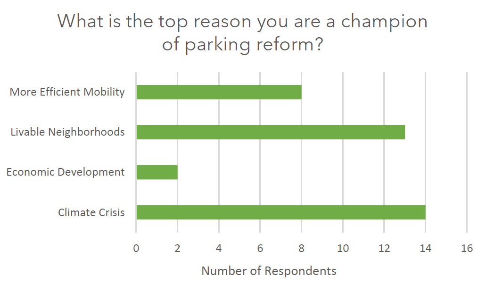
While not a specific group, getting any experts on your side can also be incredibly helpful. These could be traffic engineers, public safety officials, or anyone who could be considered an expert in a topic related to PBDs. These voices can help assure officials and the public of PBDs benefits, even when they seem counterintuitive.
Action Plan
How do you implement a parking benefit district? In this section, we will give you a road map to success, explain how PBDs can be used to promote equity, and reflect on the challenges other PBDs have faced.
Road Map
What are the steps to transform a PBD from an idea into a reality? While specifics will vary depending on local laws and the political climate, this section will give you a general idea of the necessary steps. We are making the assumption that your city does not have a PBD program in place and that it will be necessary to run a pilot before establishing one. Pittsburgh and Pasadena both created their PBDs as standalone districts that would be dissolved if they didn’t produce results. We prefer the creation of a program because it allows the city to build on the foundation of the pilot and lowers the barrier of entry for future PBDs.
This basic understanding of the powers that be will inform your strategy moving forward.
The first step to enact a PBD is to understand the legal and political landscape. What governing body will need to approve it? How do you bring it to their attention? Is there a localized group like a BID with whom you will need to work? What does the zoning code say about on-street parking? Do your city laws already allow for a PBD or will you have to work to pass new legislation?
Does your city charge for parking anywhere? If so, what is that money currently funding? Parking is political and reforming parking is very political. This basic understanding of the powers that be will inform your strategy moving forward. As part of this step, we also highly recommend using the ‘More Information’ section to get an idea of how other cities have navigated the political and legal question of PBDs. What do their websites, posters, and presentations include? What language do they use in their establishing ordinances?
Another initial step is defining the area of the PBD pilot. This area must have a peak occupancy greater than 85% for the PBD to effectively manage parking. It is important to gauge public interest, specifically with the stakeholder groups that represent the interests of the area (neighborhood associations, BIDs, etc.). Without these groups behind the PBD, there will be significant additional barriers and require a heavy-handed approach from the city government. Metered parking is already a significant change for most communities and will face dissent regardless of any arguments you make. In order for the PBD to have political viability, there must be community support.
The formal pilot implementation process should begin with an application from one of these local groups within the proposed PBD area. The city might approach a local organization with the idea for a PBD as a solution to their specific issues as we have seen in many of the case studies. Our hope is that spreading awareness of positive PBD outcomes will catalyze local advocates to flip the script, pushing their local governments for their implementation.
Once there is a proposal demonstrating community interest, the city will hopefully begin dedicating resources towards the project. PBDs require a formal parking study to determine exact occupancy, current parking stock and strategies, and the market rate price of the spaces. There are countless other considerations to be made that require governmental capacity and insight. Will we need an RPP? How will this affect citywide planning priorities? Where will we source the initial funding? Once the city is involved, it should work with the applicant group to find answers to these questions and complete the rest of the steps, supporting their proposal with their resources and knowledge.
After submission, stakeholders within the PBD must be notified of the pilot and given the opportunity to attend community meetings and public hearings to allow them to share their opinions, ask questions, and receive detailed info about how the PBD will affect them.
A local governing body, usually the city council, should then vote to establish the pilot. The measure should include the district boundaries, how pricing will be determined, how the funds will be used, and who will manage the program. It should also establish a schedule for implementation, as setting up meters, allocating the necessary resources, and establishing the oversight committee can take some time. This schedule creates a review date, usually in 2-5 years, to reexamine the PBD and the concept of a wider program based on the results of the pilot. As Austin showed us, a permanent PBD should not be established without further community input.
The city should monitor the pilot program’s progress throughout, continuing to collect data and engage with stakeholders. If the pilot is successful in solving local problems, the political inertia should help the push for a citywide PBD program. Passing an ordinance that establishes this program gives neighborhood groups the opportunity to apply for their own PBDs. It sets general citywide standards for implementation and administration while leaving enough ambiguity to allow individual PBDs to serve the specific needs of their area. We have linked various ordinances at the end of this chapter to give you a better idea of how they’re structured. Portland’s Performance Based Parking Management Manual provides an excellent step-by-step guide to forming new districts once an ordinance is in place.
Beyond Parking PBDs for Equity
How can we use PBDs to promote equity? In this section we will examine PBDs as a tool to create more just cities and an opportunity to review parking policies as a whole.
Avoiding a Concentration of Wealth
PBDs work because there is a high demand for parking in a particular area. If the money generated from this demand is reinvested to improve the public services in the metered area, you could envision a scenario where the nicest areas in a city continue to improve through meter revenue, creating more Rather than improving the quality of life for all city residents, this cycle would reinforce existing inequities and benefit areas that already have high levels of investment. How can we avoid this unintended consequence and are there other ways to share the benefits that PBDs generate?
As we mentioned before, a good reason for the 51-49 revenue split between the PBD and the city is to help avoid this issue of concentrated investment furthering inequity in public services. It is no secret that areas with higher levels of investment like downtown business districts or affluent neighborhoods often receive priority in spending and services over low-income neighbors.* By sharing the revenue throughout the city, the PBD can help fund alternative transportation options citywide. Just as with the revenue spent within the PBD, we suggest that the ordinance stipulate that the city must spend their share on transportation justice measures to keep the money from disappearing into the wider budget. The overall goal should be to reduce dependence on single occupancy vehicles and the vast amount of parking they require. If the parking revenue is not earmarked for alternative transportation, it becomes a revenue stream based on car dependence without providing an ‘out’. This earmarked spending makes high demand areas more accessible for all residents while strengthening the local economy by increasing the availability of both consumers and labor. There are ways to promote this economic accessibility through the PBD’s share of the revenue too. Portland and Columbus’ PBDs buy transportation wallets that use the city’s existing public transit and rentable transportation options to fund employees’ commutes without increasing traffic and parking occupancy. This use of PBD revenue directly benefits the PBD, while simultaneously expanding the economic opportunities it generates.
Obviously, the parking revenue remaining within the metered district is the main selling point for PBDs for area stakeholders. Guaranteeing that nearly half the money will leave the district may spark opposition, even after the reasoning is explained. There are a few solutions to this problem. An initial pilot that keeps revenue within the district can help ease the transition by demonstrating how right-pricing can solve parking problems and acclimating area stakeholders to paid parking. Once people see the parking management aspect of right-priced parking at work, they may be more willing to concede some of the revenue. Another solution may be a transitional period over the course of 5-10 years where the revenue split gradually evens out between the district and the city, giving the PBD ample time to implement various projects before their share of the revenue decreases. If the PBD is located appropriately, the area’s 51% of the meter revenue should still generate at least $150,000 2 a year after expenses. This substantial annual investment within a concentrated area will provide significant support for public projects.
We’ve also thought through a scenario that uses PBD to promote equity in a fundamentally different way. As of late, city budgetary priorities across the US are shifting more towards racial and economic justice. Cities could approach PBD eligible areas and explain that this shift has redirected funds the city had previously spent on projects in the area towards underserved parts of the city. If they want to continue to fund these projects, they could institute a PBD which the city would help them develop. Rather than the area’s new meter revenue funding other parts of the city, this approach frames PBDs as an opportunity to compensate for changing budgetary priorities driven by wider societal forces.
Problems with Parking Enforcement
Parking can also generate inequity through its enforcement. Throughout this chapter we have advocated for charging for parking. We have not advocated for criminalizing parking violations. We believe that parking is important, but it should not contribute to America’s discriminatory justice system. Criminalizing parking violations becomes another example of criminalizing poverty. Two people of different financial means committing the same parking violation could have radically different outcomes. While one person could simply pay the ticket and move on, the other could face a myriad of consequences: additional late fees, license suspensions, even losing their car entirely.
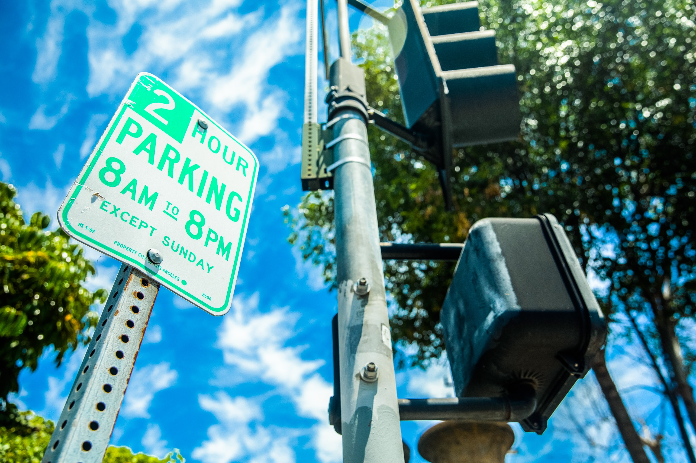
[...]parking is important, but it should not contribute to America’s discriminatory justice system.
Enforcement is not free. As stated many times throughout this chapter, we believe that the best use of parking revenue is reinvesting it into multimodal transportation solutions. Unfortunately, in many cases, police departments are tasked with issuing parking fines that are then processed through the court system. In Portland, the courts take half of the ticket revenue while across the country it is standard practice for cities to use meter revenue to finance operations costs, including police enforcement. These costs can substantially tax parking revenue earmarked for community projects, instead funding police and the courts. In some cases like Pasadena, Pittsburgh, or Ventura, the PBD elects to use its revenue to hire police. We would encourage areas interested in using their PBD to promote public safety to look to alternative measures. The Chicago Metropolitan Agency for Planning worked with Chinatown residents to create a plan for a PBD that could fund streetlights under an overpass that had previously been avoided for fear of crime. Pittsburgh expanded its RPP to keep nighttime visitors out of nearby residential areas where they had been subject to theft and robbery. Just as adding parking is often seen as the only fix for a parking problem, adding police is often seen as the only fix for a public safety problem. As an organization, Parking Reform Network believes that police involvement often escalates situations. Additionally, we see no reason that someone tasked with parking enforcement should carry a weapon or have qualified immunity for their action.
What could equitable parking enforcement look like?
To answer this question, we must ask ourselves a few more. How do we set fines? In the US, parking and traffic violations are a flat rate determined by local laws. As explained earlier, this uniform charge can be a substantial burden for one violator, while being an afterthought to another. While equal, the fine is not equitable. Similar to income tax, a progressive fine based upon income could help balance its impact. Finland, Sweden, Denmark, Germany, Austria, France, and Switzerland have implemented this approach, Finland being most famous for starting earliest (1921) and having the largest fines. In 2002, a Nokia executive was charged $103,000 for going 45 mph in a 30 mph zone.* In the US, income is a touchy subject and not easily accessible. However, vehicles offer a simple proxy. Fines could be based upon the value of the car. This practice of charging appropriately based upon income is not only fairer, but works to deter illegal behavior. For the wealthy, fines become an incentive not to break the law rather than a nominal payment for doing so. For the poor, fines are no longer a looming danger that could bring years of economic consequences.
A parking program aiming to be more equitable should then ask itself: how can we reduce fines?
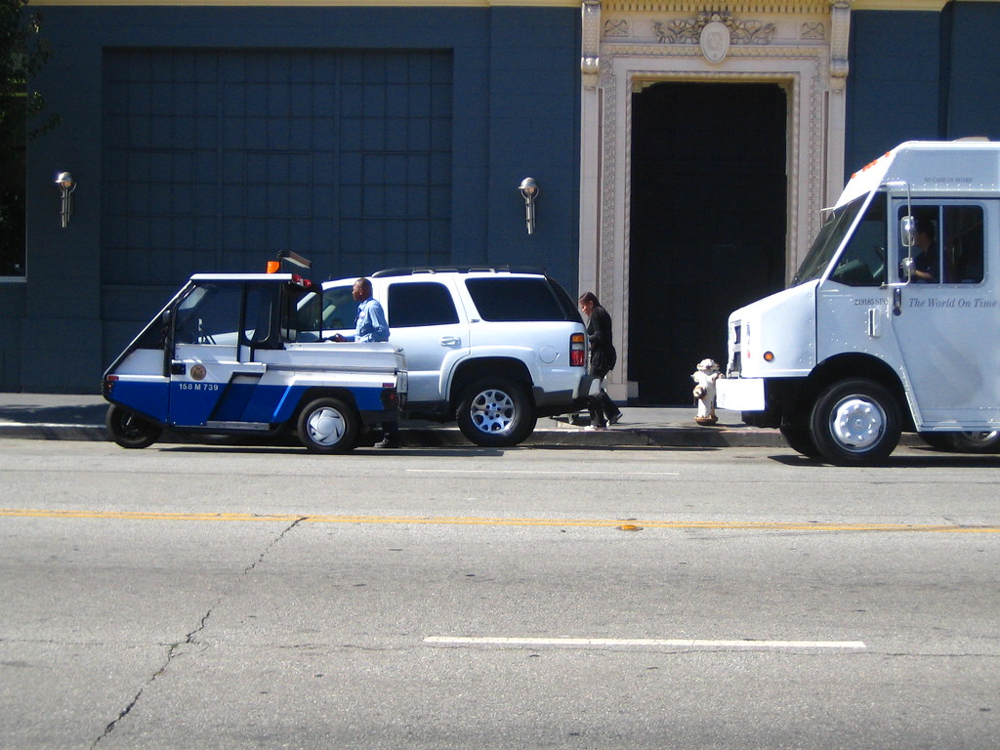
Until this change is implemented, fines will continue to have a larger impact on low income communities. A parking program aiming to be more equitable should then ask itself: how can we reduce fines? Are we encouraging violations through our design? The best system is one that doesn’t need to give a ticket because its design discourages violations. If you don’t want people parking close to the corner, make it impossible to park there with a bike rack or a planter. Are there trees blocking permit parking only signs? Is the paint identifying the disabled spots faded? Where is the city issuing fines and what can we do to discourage further violation? If the regulation is in place as a safety or accessibility measure, preventing violations is also a safety and accessibility measure. If no effort is made to stop violations beyond continued ticketing, one wonders whether the city considers violations a genuine public safety matter or a revenue stream.
Who should enforce parking regulations? In most of the US, this job falls to police departments. After the nationwide protests against police brutality in the summer of 2020, Berkley and Burlington have decided to change this practice. Berkeley is currently in the process of shifting traffic and parking enforcement duties away from the police department and into a newly created city department.* Rather than create a new department, Burlington is transfering parking enforcement responsibilities to their Public Works Department.* These changes are meant to reduce the number of interactions between armed police officers and community members, especially those of color. This is a great step towards decriminalizing parking and reducing the harm it can perpetuate towards marginalized groups. There are countless cases of traffic stops ending with police killing civilians, Philando Castille’s tragic and avoidable death most recently reaching national attention. Taking this responsibility away from police departments reduces the potential for these fatal interactions, the number of police, and the amount of parking revenue going into the justice system. Grand Rapids is also making this change, but with a different framing. The city announced in February 2021 that their mobility and parking services department would start enforcing parking to free up police officers to “concentrate more on neighborhood policing strategies.”*
This shift could take many forms depending on local capacity but we imagine it working primarily by using the funds that had previously gone to the police department for traffic/parking enforcement to fund another group doing the same work. Berkeley’s created a new department while Burlington and Grand Rapids expanded an existing one. The main difference is civilian enforcement rather than police enforcement. These jobs could take the form of a parking attendant, similar to those employed by private lots. During enforcement hours, these attendants would walk around specific parking areas answering questions, helping people pay, and issuing citations.
Adapting outdoor dining to PBDs
The COVID-19 pandemic brought an onset of outdoor dining, parklets, or other curbside activations used to spur economic development in businesses that could no longer operate indoors. Many of these activations saw great success, including New York City’s Open Streets program, San Francisco Shared Spaces, and many others across the country. As the nation forges a new normal, cities are grappling with strategies to integrate the success of flexible curb space with maintaining access to businesses and parking revenue loss.
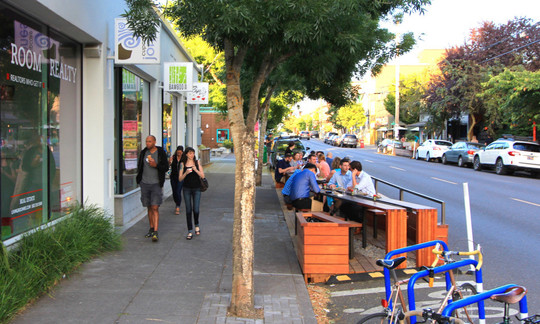
Outdoor dining in the Alberta Arts District. Portland, Oregon.
As the nation forges a new normal, cities are grappling with strategies to integrate the success of flexible curb space with maintaining access to businesses
Some emerging strategies include application fees coupled with monthly fees to use the curb space for dining as opposed to parking, and capping a specified number or percentage of the downtown’s parking supply for this use. While these management tools address unruly outdoor dining fears, there are some key flaws that PBD strategies can help to address. Parklets and outdoor dining have been proven to generate city funds associated with increased customers generating sales tax revenue in comparison to metered parking--if parking is charged at all. Furthermore, limiting the number or percentage of spaces businesses can apply curbside activations to also limits potential revenue generated from the additional customers patronizing these businesses. It also raises issues as to which businesses do and do not have the opportunity to have outdoor dining and increase their revenue stream, which applications to prioritize and who ultimately decides that, along with the backlash that could come with it.
Allowing all businesses to convert on-street parking into outdoor dining free of charge may not be feasible, but the cost in doing so should be similarly aligned with the price a driver would pay to park in that space. And with this revenue, there is an opportunity to funnel it back into the community, like a PBD model. This could allow the business to provide meaningful input and encourage more customers to shop along the corridor.
Learn More
Visit our Resources page for additional information, including links to additional articles, studies, and examples of government policy and outreach efforts.